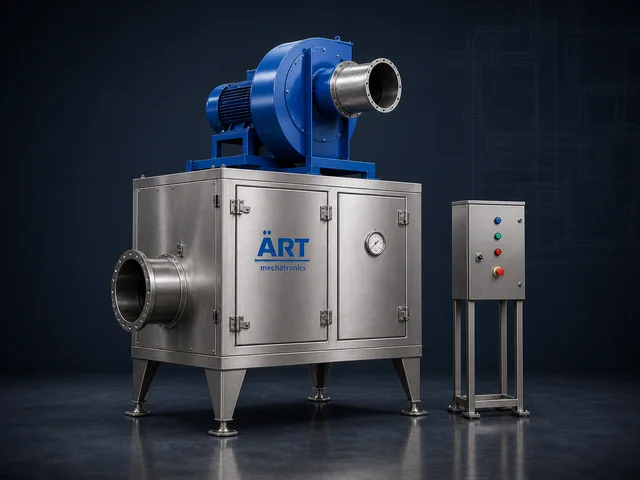
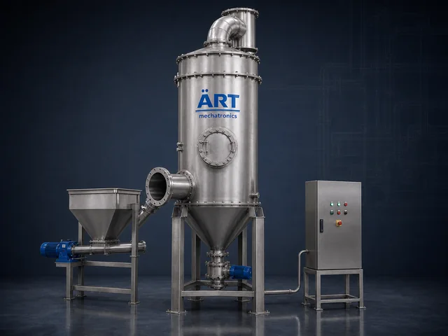

Dust collection & pollution control
Keeping dust in the system and out of the plant air — dust collectors, bag filters, cyclones and scrubbers.
Browse all products →Dust collectors 8 machines

Dust Collector Machine
A Dust Collector Machine is an essential industrial pollution control system designed to remove dust, fumes, and…
View details →
Bag House Dust Collector Machine
A Bag House Dust Collector Machine, also known as a Bag Filter Dust Collector, is a highly efficient industrial air…
View details →
Cyclone Dust Collector Machine
A Cyclone Dust Collector Machine, also known as an Industrial Cyclone Separator, is a highly efficient mechanical dust…
View details →
Multiclone Dust Collector Machine
A Multi Cyclone Dust Collector Machine, also known as a Multiclone Separator or Multi Cyclone Dust Collector, is an…
View details →
Pulse Jet Dust Collector Machine
A Pulse Jet Dust Collector Machine, also known as a Pulse Jet Bag Filter or Pulse Jet Baghouse, is an advanced…
View details →
Cartridge Dust Collector Machine
A Cartridge Dust Collector Machine, also known as a Cartridge Filter Dust Collector, is a compact and highly efficient…
View details →
Pleated Dust Collector Machine
A Pleated Dust Collector Machine, also known as a Pleated Filter Dust Collector or Pleated Bag Filter System, is an…
View details →
Flat Bag Dust Collector Machine
A Flat Bag Dust Collector Machine, also known as a Flat Bag Filter or Panel Bag Dust Collector, is an advanced…
View details →Extraction systems 7 machines

De-Dusting System
A De-Dusting System Machine is an advanced industrial dust control solution designed to capture, extract, and filter…
View details →
Centralised Dust Collection System
A Centralized Dust Collection System is an advanced industrial air pollution control solution designed to capture,…
View details →
Dust Extraction System
A Dust Extraction System is an essential industrial air pollution control solution designed to capture, extract, and…
View details →
Fume Extraction System
A Fume Extraction System is an advanced industrial air pollution control solution designed to capture, extract, and…
View details →
Air Pollution Control Equipment
Air pollution control equipment plays a critical role in modern industries by controlling, filtering, and eliminating…
View details →
Centralised Dust Collection System
A Centralized Dust Collection System, also known as an Industrial Dust Collector System or Central Dust Extraction…
View details →
Air Filter
An Industrial Air Filter is a filtration unit that cleans the air moving through a plant, whether that is supply air,…
View details →Scrubbers 2 machines

Wet Scrubber
A Wet Scrubber System is an advanced industrial air pollution control device designed to remove gases, fumes, vapors,…
View details →
Dry Scrubber
A Dry Scrubber is an air pollution control system that treats acid gases, fumes and odours in an industrial exhaust…
View details →Not finding it? Ask us on WhatsApp →
Browse the rest of the range
 Material Handling Equipment & Industrial Automation
30 machines
Material Handling Equipment & Industrial Automation
30 machines
Material Handling Equipment & Industrial Automation
See all 30 machines →
 Dust Collection & Pollution Control Equipment
17 machines
Dust Collection & Pollution Control Equipment
17 machines
Dust Collection & Pollution Control Equipment
See all 17 machines →